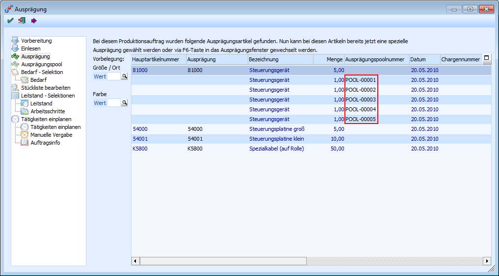

Die Produktionsauftragsanlage, welche über den Menüpunkt
1 WinLine PPS
1 Produktion
1 Produktionsvorbereitung
aufgerufen wird, findet in gewohnter Weise statt.
In dem Fenster "Ausprägung" wird der zu produzierenden Artikel automatisch aufgesplittet und mit einer eigenen Ausprägungspoolnummer versehen.
Die Erzeugung der Poolnummern geschieht automatisch und zusätzliche Poolnummern können nicht angelegt werden.

Das Ausprägen des Produktionsartikels bzw. der Komponenten, sowie die Poolnummernzuordnung, kann in verschiedenen Programmen stattfinden und muss nicht bereits in der Auftragsanlage erfolgen.
Ausprägen
ü Produktionsauftragsanlage - Fenster "Ausprägung"
ü Produktionskorrektur
ü Produktionsendmeldung
Poolnummernzuordnung
ü Produktionsauftragsanlage - Fenster "Ausprägung"
ü Produktionskorrektur
ü Ausprägungspool
ü Produktionsendmeldung
Achtung
Es kann den Komponenten erst eine Poolnummer zugeordnet werden, wenn das Ausprägen der Komponente stattgefunden hat.